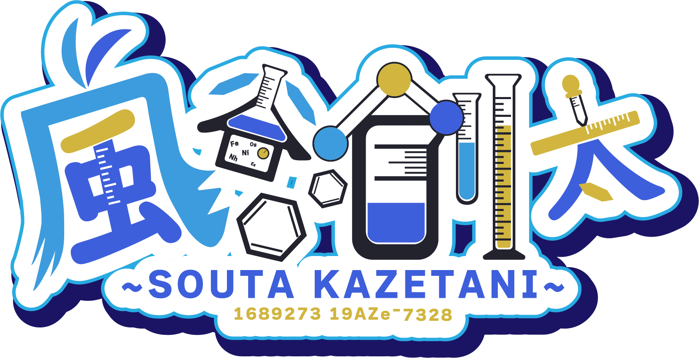

ガチで化学で博士号をめざしている錯体化学Vtuber。 少しでも科学的な話に興味を持ってもらえたらいいな！
専門は無機・錯体化学。化学以外にもゲーム（FPS）、動画作成、簡単な創作も好きです。

Loading LabChemistry VTuber / Mad Chemist VT
錯体化学の話題を中心に発信中！博士号をめざしながら、少しでも科学的な話に興味を持ってもらえたらいいな、という気持ちで活動しています。
Selected Videos
Profile
ガチで化学で博士号をめざしている錯体化学Vtuber。 少しでも科学的な話に興味を持ってもらえたらいいな！
専門は無機・錯体化学。化学以外にもゲーム（FPS）、動画作成、簡単な創作も好きです。
難しいことを難しいまま遠ざけず、ちょっと覗いてみようと思えるようにしたい！VTuber活動を通して専門の化学の入口へ!!
Mad Chemist VT
髪色をはじめ、さわやかな感じで！（地毛です、異論はなし！！）
アイコンに描かれている原子番号28の元素。風谷個人的に一番愛している。
白衣と黒いシャツ。実験室ならデフォルトだよね？？
FPS、動画作成、簡単な創作。ゲーム用のサブチャンネルでも活動しています。
SOUTA KAZETANI / GAMING
化学の合間に、FPS。
ゲームをしているときの風谷創太。
化学だけでなく、ゲームの時間も楽しんでいます。
PROFILE
化学VTuberとして活動する一方で、趣味はゲーム。FPS、動画作成、簡単な創作も好きです。
Works
Logs
Links
YouTube概要欄、note、公開されている企画ページをもとに仮組みしています。 正式なプロフィール文や画像素材がある場合は、そこに合わせて調整できます。